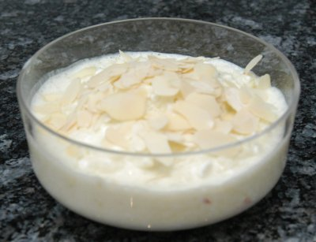

| Zutaten für 4 Personen: | |
| 4 | Äpfel mittelgross |
| 4 EL | Zitronensaft |
| 4 EL | Zucker oder |
| 2 TL | Assugrin flüssig |
| 50 g | Cottage-Cheese |
| 2 EL | Joghurt Nature |
| 2 TL | Mandelsplitter geröstet |
Cottage-Cheese mit Joghurt, Zitronensaft, Zucker oder Assugrin gut mischen und luftig rühren. Äpfel mit Bircherraffel direkt in die Sauce reiben. Immer sofort gut mischen. Die Creme in Coupegläser füllen, mit gerösteten Mandelsplittern überstreuen und sehr kalt servieren. Diese Creme lässt sich auch mit Birnen oder Beeren zubereiten.
Herbert Eigenmann, Code: AAC
Schmeckt OK, haut mich aber nicht vom Hocker, RE 1.4.2008
@LINKBACK_TAG@ @WAKELOCK@